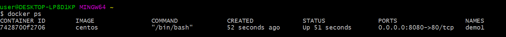
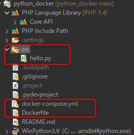

$ docker cp ホスト内のパス コンテナID:コンテナ内のパス注意：
Error response from daemon: filesystem operations against a running Hyper-V container are not supported
逆にコンテナからホストへ
パスを入れ替えるだけでよい。$ docker cp コンテナID:コンテナ内のパス ホスト内のパス
環境
Windows10 バージョン1903。手順
$ winpty docker pull centos:centos7「centos:centos7」の部分は「 centos:latest」でも良い。
$ winpty docker run -it -d --name demo1 -p 8080:80 -v /c:/Users/user/git/docker_demo/html:/var/www/html centos
| winpty |
winptyはGit for WindowsのGit Bashを使っているときに必要になるコード。これがないとエラーになる。 |
| -it |
「t」の部分はttyを表している。ttyとは仮想環境（コンテナ）の入出力が関わるデバイスのことらしいが詳しくは不明。 「i」の部分はinteractive、つまり「対話」を表す。シェルなのでコンテナとホスト(仮想でなくいつものWindows)の間で対話できるような仕組みだろうか？ |
| -d | デタッチド・モードする。省略した場合、アタッチモードになる。 デタッチド・モードはコンテナをバックグランドで動かすモードのようだ。 デタッチド・モードにするとターミナル(Git Bash)を閉じてもコンテナは生きており、後ろで動いている。 |
| --name demo1 |
--name demo1はコンテナ名を表す。「demo1」の部分に任意の名前を付けられる。 コンテナ名はdockerの各種コマンドで用いられる。（コンテナ名を省略した場合は、コンテナIDを用いることになる） |
| -p 8080:80 |
「-p 8080:80」はポート番号を表す。 「80」はwebサーバーを表すおなじみの80番ポートのこと。 「8080」はホストのブラウザからコンテナのwebサーバーにアクセスするときの仮ポート番号。8080は開発環境を表す慣習的な番号であるが、好きな番号を指定してもよい。 URLに使われており、ホスト側のブラウザで「http://localhost:8080」にアクセスするとコンテナのwebサーバー内のサイトにアクセスできる。 |
| -v /c:/Users/user/git/docker_demo/html:/var/www/html |
-vはボリュームのことである。ボリュームとはコンテナ内のディレクトリをホストのディレクトリと結びつける設定のようなもの。（ホストだけでなく別コンテナとの結びつけもできる）
コンテナがホストのディレクトリをマウントするという意味合いもある。 「:」で区切られており、左側がホストのディレクトリ、右側がコンテナ内のディレクトリを表しており、この２つのディレクトリを結び付けている。 つまり、コンテナ内で「/var/www/html」を見るとき、ホスト内の「c:\Users\user\git\docker_demo」を見ているということである。 「/c:/Users/user/git/docker_demo/html」はスラッシュから始まっているが、これは「¥」で区切られているということを表しているらしい。 Windows環境ならではの記述方法のようだ。 |
| centos | イメージ名を表す。イメージ名の代わりにイメージIDを指定することもできる。 |
$ docker ps
$ winpty docker attach demo1このコマンドを実行するとコンテナ内のCentOSを操作できるようになる。 このことをコンテナにアタッチすると言う。
# yum install httpdインストール中、いくつか質問を聞かれるのでYES(yを入力）を選択。
httpd -T
$ docker pull mysqlコンテナ作成。
$ docker run --name mysql_demo -e MYSQL_ROOT_PASSWORD=neko -d -p 13306:3306 mysql実行
$ winpty docker exec -it mysql_demo bashログイン
# mysql - h mysql_demo -uroot -pneko
上手くいっていない箇所
とりあえず、ここまではうまくいったが,ボリュームによるデータの永続がうまくいかない。$ winpty docker exec -it mysql-51-11 bash # mysql -u root -p Enter password: mysql> show databases;
ファイル構成
docker-compose.yml
version: '3'
services:
app:
build: ./
volumes:
- ./src:/root/src
tty: true
Dockerfile
FROM python:3
USER root
RUN apt-get update
RUN apt-get -y install locales && ¥
localedef -f UTF-8 -i ja_JP ja_JP.UTF-8
RUN apt-get install -y vim less
ENV LANG ja_JP.UTF-8
ENV LANGUAGE ja_JP:ja
ENV LC_ALL ja_JP.UTF-8
ENV TZ JST-9
ENV TERM xterm
RUN mkdir -p /root/src
COPY ./src /root/src
WORKDIR /root/src
RUN pip install --upgrade pip
hello.py
print ('HelloWorld2')
print('うさぎとネコの飼い方')
コマンド
docker-compose up -d
docker exec -it コンテナID bash※コンテナIDは「docker ps」で確認できる。
python hello.py